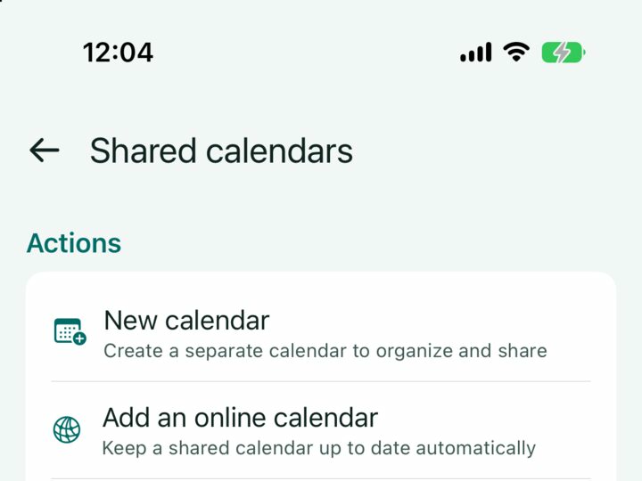
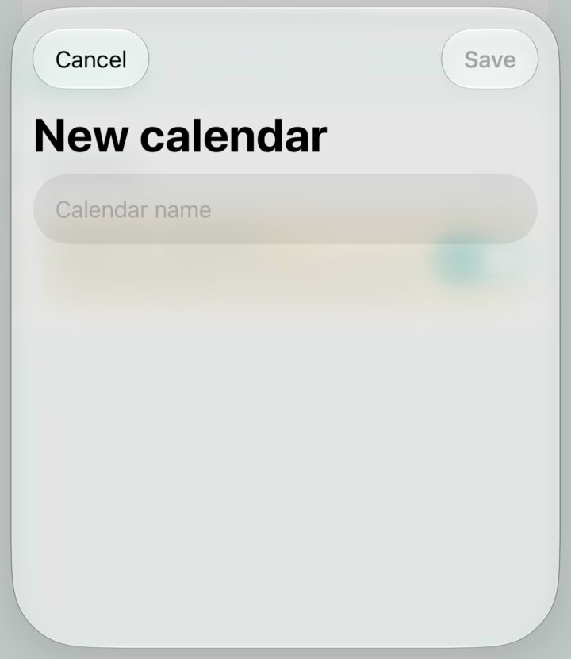
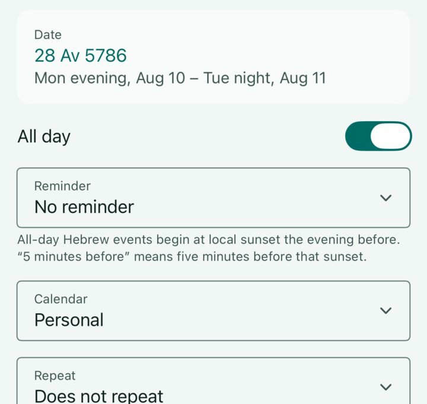
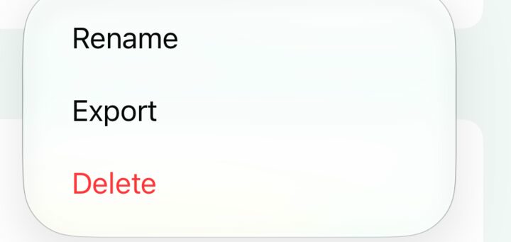
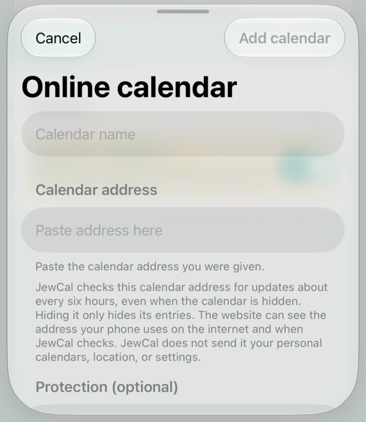
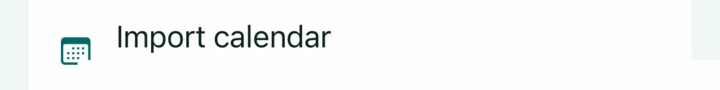

Shared calendar guide
Make a calendar, send someone a copy, or let JewCal keep it current for them.
Create and share a calendar
1. Open Shared calendars
In JewCal, tap Settings, then Shared calendars.

2. Make the calendar
Tap New calendar. Give it a clear name, then tap Save.

3. Put events in it
Return to the calendar and tap the plus button. While making the event, tap Calendar and choose the calendar you just made.

4. Save and send a copy
Open Shared calendars again. Tap the three dots beside your calendar, then tap Export. Choose a passphrase when JewCal asks; every exported .jewcal file is encrypted.
Save the calendar and send it the same way you would send a photo or document.

5. Keep everyone’s calendar current
Put the saved calendar on a website and give people its calendar address. If you do not manage the website, ask the person who does to help.
After changing events, export the calendar again and replace the old copy on the website. Keep the same calendar address and passphrase so everyone stays connected.
Add a shared calendar
Let JewCal keep it current
- Copy the calendar address you were given.
- Open Settings → Shared calendars.
- Tap the button named Add an online calendar.
- Type a name, paste the
https://calendar address, and enter the passphrase if you were given one. - Tap Add calendar.
JewCal checks for changes about every six hours, even when you hide the calendar. Hiding it only hides its events.
The website may keep a record of each check. JewCal does not send your personal calendars, location, or settings. Read more about privacy.

Add a saved copy
- Save the calendar someone sent you.
- Open Settings → Shared calendars.
- Tap Import calendar and choose the saved calendar.
- Enter the passphrase if JewCal asks for it, then add it as a new calendar.
This copy does not receive later changes. Ask the sender for a new copy when you need one.

Try a sample calendar
It has four sample events. This public sample is deliberately unprotected, so no passphrase is needed.